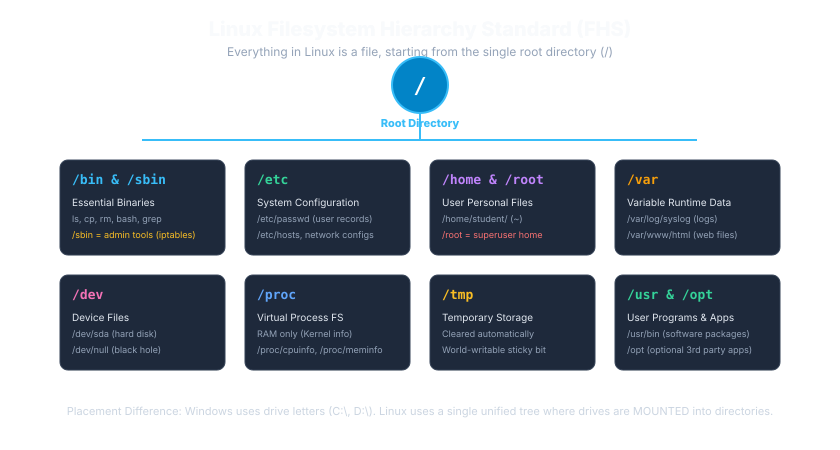
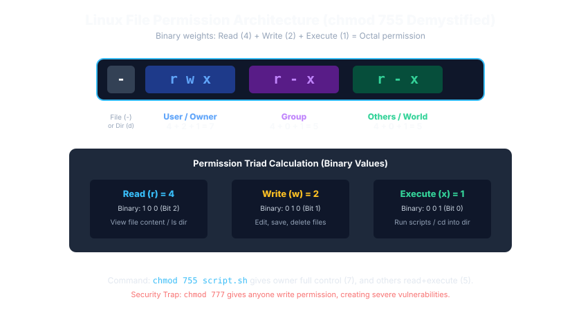

Linux & Windows Command Prompt
Master CLI Navigation, Permissions, Networking & Troubleshooting
The ultimate technical placement handbook for MCA, BCA, and B.Tech CS/IT freshers. Master terminal command execution, file tree navigation, absolute vs relative paths, chmod octal masks, process pipelines, stream redirection, and server administration.
Master Linux & Command Prompt Roadmap
Mastering the command line requires progressing systematically through three technical domains: Filesystem Navigation & Storage, I/O Streams & Pipeline Processing, and Operating System Administration (Permissions, Processes & Networking).
Operating System Shell & CLI Architecture
/) vs Windows C:\, Absolute vs Relative paths, pwd, cd, ls, mkdir>), Append (>>), Pipe chaining (|)sudo, chownps, top, kill -9, ping, netstat, curl
The CLI executes within OS User Space. A Terminal Emulator (like Windows Terminal or GNOME Terminal) accepts keyboard input and renders text, passing keystrokes to a Shell (Bash, Zsh, CMD) which parses commands, evaluates environment variables ($PATH), and orchestrates files, streams, permissions, and background processes.
Viva Distinction: A Terminal is merely the GUI display window; a Shell is the actual language interpreter executing your logic. find searches for files by name/metadata on disk, whereas grep scans for text inside files.
A terminal is like a TV screen showing the game, while the shell is the game engine processing the rules. Piping commands (command1 | command2) is like an assembly factory line where one worker's finished output becomes the next worker's raw material.
Command Line Fundamentals & GUI vs CLI
1. One-Line Definition: A Command-Line Interface (CLI) is a text-based user interface used to interact with a computer's operating system by typing sequential commands and receiving immediate text outputs.
| Dimension | Graphical User Interface (GUI) | Command Line Interface (CLI) |
|---|---|---|
| Interaction Style | Visual mouse clicks, icons, drop-downs, and windows. | Text commands, flags/arguments, and plain-text stream outputs. |
| Resource Consumption | Heavy: Requires dedicated GPU memory, window compositor, and visual renderers. | Extremely lightweight: Consumes mere megabytes of RAM; runs headlessly. |
| Automation Potential | Poor: Difficult to script repetitive multi-step actions across thousands of files. | Exceptional: Commands can be piped, chained, and scripted into automated shell scripts. |
| Cloud / Server Reality | Rare: 99% of cloud production servers (AWS EC2, Docker containers) have zero GUI installed! | Universal: Servers are managed exclusively via remote SSH command terminals. |
Terminal vs Shell: The #1 Interview Distinction
In placement interviews at Accenture, Cognizant, and TCS, students frequently conflate "Terminal" and "Shell". They are distinctly separate layers of software:
Wrong Thinking: "Terminal is just another name for Bash."
Correct Thinking: The Terminal is purely the graphical window wrapper that displays text and takes keyboard input. The Shell is the underlying program that parses syntax, executes commands, and returns output. You can run Bash, Python, or PowerShell inside the exact same terminal window!
Linux (Bash) vs Windows (CMD) Rosetta Stone
Freshers must frequently switch between local Windows workstations and cloud Linux servers. Memorize these direct command equivalents:
| Operation | Linux / Bash Command | Windows CMD Command | Key Behavioral Difference |
|---|---|---|---|
| Print Current Directory | pwd (Print Working Directory) |
cd (typed alone with no args) |
In Linux, cd alone changes directory to home ~. |
| List Files & Folders | ls (or ls -la) |
dir |
Linux ls defaults to multi-column; dir lists vertically with file sizes and timestamps. |
| Change Directory | cd folder |
cd folder (or cd /d D:) |
In Windows CMD, switching drive letters requires the /d switch: cd /d D:\projects. |
| Create New Directory | mkdir folder (or mkdir -p a/b) |
mkdir folder (or md) |
Linux mkdir -p creates nested directories recursively. |
| Create Empty File | touch file.txt |
type nul > file.txt |
touch also updates existing file access timestamps without altering content. |
| View File Content | cat file.txt |
type file.txt |
Linux cat concatenates; Windows type prints contents to stdout. |
| Copy Files | cp src.txt dst.txt (cp -r for dirs) |
copy src.txt dst.txt (xcopy for dirs) |
Linux uses -r flag for recursive folder copying. |
| Move / Rename | mv old.txt new.txt |
move old.txt new.txt (or ren) |
Linux mv seamlessly renames and relocates files in one command. |
| Delete Files | rm file.txt (rm -rf for dirs) |
del file.txt (rmdir /s for dirs) |
Both bypass the Recycle Bin/Trash permanently! |
| Clear Terminal Screen | clear (or Ctrl + L) |
cls |
Resets terminal viewport buffer. |
| Display Network IP | ip addr (or legacy ifconfig) |
ipconfig (or ipconfig /all) |
Displays active network interfaces, IP addresses, and MAC addresses. |
File System Hierarchy: Single Root vs Drive Letters
📁 Linux Filesystem Hierarchy Standard (FHS Tree)
Navigating the root tree structure, binary storage, config paths, and virtual device files.

Essential placement exam directory mapping:
- / (Root): The single top-level parent of all files and mounted drives (no C: or D: drives in Linux!).
- /etc: Host-specific system-wide configuration files (e.g.
/etc/hosts,/etc/passwd,/etc/nginx/nginx.conf). - /var: Variable dynamic data that grows continuously: log files (
/var/log/syslog), mail spools, and web databases. - /bin & /usr/bin: Essential executable user command binaries (
ls,cp,python). - /proc: Virtual pseudo-filesystem residing purely in RAM containing kernel runtime statistics and active Process IDs (PIDs).
/etc/nginx/nginx.conf for syntax misconfigurations, inspect error stack traces in /var/log/nginx/error.log, and inspect active worker PIDs in /proc.
Does Linux assign drive letters like C:\ or D:\ when a new physical hard drive or USB stick is connected?
Answer: NO. Linux mounts all physical and virtual drives as directories attached into the single unified root (/) filesystem hierarchy (e.g. /mnt/usb or /media/drive).
Windows organizes storage under discrete hardware drive letters (C:\, D:\, E:\). In stark contrast, Linux has one unified root directory denoted by a single forward slash (/). All physical drives, SSDs, USB devices, and virtual filesystems are mounted as folders underneath this single root.
Essential user binaries (ls, cp, bash) and system binaries (iptables, fdisk).
System-wide static configuration files (passwd, hosts, nginx.conf, fstab).
/home/username stores personal user files. /root is superuser home (not / itself!).
/var stores variable dynamic logs (/var/log) and databases. /tmp holds temporary files.
Unlike Windows which isolates storage by hardware drive letters (C:, D:), Linux unifies all physical storage disks, partitions, and virtual memory filesystems underneath a single root '/' mount point.
'/' is the Root Directory; '/root' is the superuser's personal home directory. They are completely different paths! Also, '~' expands to the current user's home directory (/home/username).
Single skyscraper lobby: In Windows, every building in town has its own independent front door (C:\, D:\); in Linux, every office and floor is reached through one single Grand Central entrance lobby (/).
Path Delimiters: Linux strictly uses forward slashes: /home/user/app.py. Windows historically uses backslashes: C:\Users\User\app.py.
In Code: In Python/Java strings, backslashes act as escape characters (\n, \t). Always use forward slashes in cross-platform code (path = "data/input.csv")!
Absolute vs Relative Paths
| Path Type | Starting Anchor | Example Path | Behavior |
|---|---|---|---|
| Absolute Path | Root directory (/ in Linux, C:\ in Windows) |
/home/john/projects/api/server.js |
Unambiguous: Always points to the exact same file regardless of where you currently stand in the terminal. |
| Relative Path | Current Working Directory (where you are right now) | ./api/server.js or ../config.json |
Context-dependent: Evaluated relative to your current location (pwd). Breaks if you change folders! |
The Special Path Symbols
.(Single Dot) → Represents the current directory (e.g../script.sh)...(Double Dot) → Represents the parent directory one level up (e.g.cd ..).~(Tilde) → Shorthand alias for the current user's home directory (e.g./home/ubuntu)./(Single Forward Slash) → The root directory of the filesystem.
5 Rapid Placement Path Tracing Questions
Q1: You are in /var/log/nginx. What directory does cd ../.. take you to?
Answer: /var. (One level up is /var/log; second level up is /var).
Q2: You are in /home/user. What does cat ../../etc/hosts access?
Answer: /etc/hosts. (Two levels up reaches /, then traverses down into etc/hosts).
Q3: Is /home/user/file.txt an absolute or relative path?
Answer: Absolute path (starts with the root /).
Q4: What does cd ~ do in Linux?
Answer: Navigates directly to your user's home directory (e.g. /home/username).
Q5: Why does running myscript.sh fail in Linux even if the file is in the current folder?
Answer: For security, Linux does not search the current directory by default. You must explicitly specify relative path: ./myscript.sh.
Directory Navigation Commands (pwd & cd)
# Print the exact absolute path of the current working directory
pwd
# Change into child directory
cd documents/projects
# Move one level up into parent directory
cd ..
# Move two levels up into grandparent directory
cd ../..
# Return to your personal home directory (/home/username)
cd ~
# Or simply type cd with no arguments in Linux!
cd
# Jump immediately to the root directory
cd /
# Pro Tip: Toggle back to the previous directory you were just in!
cd -Files & Directories Management
Day-to-day command line productivity depends on mastering file creation, inspection, moving, and safe deletion.
# 1. Listing files: Basic, Hidden (-a), Detailed (-l), and Combined (-la)
ls
ls -a # Shows hidden files (files starting with a dot, e.g. .bashrc, .git)
ls -la # Long format listing with permissions, owner, size, and date
# 2. Creating Directories: Single and Nested
mkdir my_project
mkdir -p backend/api/v1/controllers # -p creates parent directories recursively!
# 3. Creating & Updating Files
touch server.js # Creates empty file or updates timestamp if exists
# 4. Viewing File Content:
cat config.json # Prints entire file to console
less large_log.log # Interactive scrollable pager (press 'q' to exit)
head -n 10 data.csv # Prints first 10 lines
tail -n 20 error.log # Prints last 20 lines
tail -f live_app.log # Continuously streams incoming real-time logs!
# 5. Copying & Moving
cp file.txt backup.txt # Copy single file
cp -r folder1/ folder_backup/ # -r flag is required for recursive directory copy
mv old_name.txt new_name.txt # Rename file
mv app.js src/ # Move file into directory
# 6. Deletion (DANGER ZONE!)
rm unwanted.txt # Delete file permanently (bypasses Trash!)
rm -r old_folder/ # Recursively delete directory
rm -rf temporary_data/ # Force recursive deletion without confirmation prompt!Warning: In Linux, running rm -rf / as root instructs the OS to recursively force-delete every single file and system binary on the entire computer with zero confirmation. There is no "Recycle Bin" or "Undo" in Linux terminal deletion.
Searching: find vs grep (Files vs Contents)
| Feature | find Command |
grep Command |
|---|---|---|
| Primary Target | Searches for File Names and Directory metadata on disk. | Searches for Text Patterns inside file contents. |
| Analogy | Looking for a book in a library by its title or author. | Searching for a specific sentence inside the pages of a book. |
| Common Syntax | find . -name "*.py" |
grep -rn "NullPointerException" /var/log/ |
| Windows Equivalent | dir /s *.py |
findstr /s /i "error" *.log |
# Find all JavaScript files in the current folder and subfolders
find . -type f -name "*.js"
# Find files modified within the last 24 hours
find . -mtime -1
# Search for the string "DATABASE_URL" recursively with line numbers (-n) and case-insensitive (-i)
grep -rni "database_url" ./srcWildcards & Globbing Patterns (* and ?)
Wildcards (Globbing) are special characters interpreted by the shell to match patterns of filenames:
*(Asterisk) → Matches zero or more characters (e.g.*.txtmatchesa.txt,report.txt, and.txt).?(Question Mark) → Matches exactly one single character (e.g.file?.txtmatchesfile1.txtandfileA.txt, but NOTfile10.txt).[abc](Character Set) → Matches any single character enclosed in brackets (e.g.image[1-3].pngmatchesimage1.png,image2.png,image3.png).
Question: A directory contains: test.c, test1.c, test12.c, mytest.c. What is the output of ls test?.c?
Answer: Only test1.c. (test.c has 0 characters after 'test'; test12.c has 2 characters; mytest.c doesn't start with 'test').
Pipes (|): Chaining Command Workflows
The pipe operator (|) embodies the Unix philosophy: write programs that do one thing well, and combine them with text streams. A pipe takes the Standard Output (stdout) of the left command and streams it directly into the Standard Input (stdin) of the right command.
# Count how many total files exist in the current directory
ls -1 | wc -l
# Search for running python processes and view details
ps aux | grep "python"
# Display the 5 largest memory-consuming processes
ps aux --sort=-%mem | head -n 6Stream Redirection: > vs >>
| Operator | Name & Action | Behavior if File Exists | Example Command |
|---|---|---|---|
> |
Single Greater-Than (Overwrite) | Overwrites and wipes existing file contents completely! Creates file if absent. | echo "Initial text" > notes.txt |
>> |
Double Greater-Than (Append) | Preserves existing content and appends new text to the bottom of the file. | echo "Appended text" >> notes.txt |
< |
Less-Than (Input Redirection) | Feeds file contents into a program's standard input stream (stdin). | mysql -u root db_name < backup.sql |
The Mistake: Running cat file.txt > file.txt in an attempt to modify a file in-place.
The Catastrophe: The shell processes the redirection operator > before executing the command, immediately truncating file.txt to 0 bytes! When cat reads it, the file is already empty, wiping your code permanently.
Standard Streams: stdin (0), stdout (1), stderr (2)
In Unix-like systems, everything is treated as a file stream. Every executing process is automatically assigned three standard file descriptors upon launch:
| File Descriptor | Stream Name | Default Source / Destination | How to Redirect |
|---|---|---|---|
0 |
stdin (Standard Input) | Keyboard input stream | < input.txt (or 0<) |
1 |
stdout (Standard Output) | Terminal display console | > output.log (or 1>) |
2 |
stderr (Standard Error) | Terminal display console (separate channel!) | 2> error.log |
# 1. Redirect only error messages to error.log (normal output stays on screen)
./build.sh 2> error.log
# 2. Redirect standard output to out.log, and error messages to err.log separately
./build.sh 1> out.log 2> err.log
# 3. Famous Interview Syntax: Merge stderr into stdout and save everything to all.log
./build.sh > all.log 2>&1
# (2>&1 means: redirect file descriptor 2 to wherever file descriptor 1 is pointing)
# 4. Discard output completely into the black hole of Linux (/dev/null)
./noisy_script.sh > /dev/null 2>&1Environment Variables
Environment variables are dynamic key-value pairs maintained by the operating system shell that configure running processes, database credentials, language runtimes, and system paths.
| Operation | Linux / Bash | Windows Command Prompt |
|---|---|---|
| Display Variable | echo $PORT (Prefixed with $) |
echo %PORT% (Surrounded by %) |
| Set Variable (Current Session) | export PORT=3000 |
set PORT=3000 |
| List All Active Variables | printenv (or env) |
set (typed alone) |
| Permanent Persistence | Append export to ~/.bashrc or /etc/environment |
Use setx PORT 3000 or Windows System GUI |
The PATH Variable & Executable Discovery
When you type python, git, or node, the operating system does NOT scan your entire 500GB hard drive. Instead, it looks inside a specific list of directories stored in the PATH environment variable.
1. Check /usr/local/bin → Not found
2. Check /usr/bin → FOUND executable binary! (/usr/bin/git)
3. Launch process immediately!
(If all directories in PATH are searched with no match → Output: "command not found")
In Linux, PATH directories are separated by colons (:): /usr/local/bin:/usr/bin:/bin. In Windows, they are separated by semicolons (;): C:\Python311;C:\Windows\system32.
Linux File Permissions & chmod Numerical System
🔒 chmod 755 Octal File Permissions & Binary Triad
Calculating read, write, and execute permissions across User, Group, and Others.

The #1 Linux file permission trick question:
- Numeric Octal Values: Read (r) = 4, Write (w) = 2, Execute (x) = 1.
- chmod 755: User = 7 (4+2+1 = rwx), Group = 5 (4+0+1 = r-x), Others = 5 (4+0+1 = r-x).
- The Placement Trap: On a directory, what does 'Execute' (x) mean? It does NOT mean running a program; it means permission to
cdinto the directory and traverse its contents! Without 'x', a user cannot open a directory even if they have read ('r') permission!
chmod 755 to public directories (allowing web servers and users to traverse folders) and chmod 644 to PHP/HTML scripts (read/write for developer, read-only for public), preventing attackers from modifying website code.
What octal chmod number represents read and write permissions for the User, read-only for the Group, and zero permissions for Others?
Answer: chmod 640 (User: 4+2=6, Group: 4=4, Others: 0=0).
In Linux, every file and directory enforces strict permission controls divided into three user categories: User (Owner), Group, and Others (World).
- (File), d (Directory), l (Symlink)
r (4) + w (2) + x (1) = 7
r (4) + - (0) + x (1) = 5
r (4) + - (0) + - (0) = 4
The 10-character Linux permission string parses into the file type followed by three triplets representing Owner, Group, and Others. Each triad uses binary flags: Read = 4, Write = 2, Execute = 1, summing to an octal digit between 0 and 7.
chmod 777 grants full read, write, and execute permissions to the entire world, creating a catastrophic security hole. Production web roots should typically be chmod 755 for directories and 644 for files.
Bank Safety Deposit: The account holder has full access (Owner 7); the bank vault guard can open and inspect with key (Group 5); members of the public can only view the vault door (Others 0).
| Permission | Symbol | Binary Value | Decimal Weight | Action Allowed on File |
|---|---|---|---|---|
| Read | r | 100 | 4 | View or read file contents. |
| Write | w | 010 | 2 | Modify, overwrite, or delete file contents. |
| Execute | x | 001 | 1 | Run the file as a program, script, or binary. |
| Octal Code | Permission String | Common Real-World Usage |
|---|---|---|
chmod 755 script.sh | rwxr-xr-x | Standard for executable scripts and web directories (Owner full access, others can read/execute). |
chmod 644 document.txt | rw-r--r-- | Standard for text files, HTML, and images (Owner can read/write; others can only read). |
chmod 600 id_rsa | rw------- | Private SSH keys (Strict privacy: Only the owner can read/write; no one else has access). |
chmod 777 danger.sh | rwxrwxrwx | Severe Security Risk! Gives read, write, and execute permissions to anyone on the server. |
File Ownership (chown & chgrp)
Every file belongs to a specific user and group. Changing ownership requires superuser privileges via chown (Change Owner):
# Change owner to 'ubuntu'
sudo chown ubuntu app.js
# Change both owner to 'ubuntu' and group to 'www-data' simultaneously
sudo chown ubuntu:www-data /var/www/html/index.html
# Recursively change ownership for an entire directory tree
sudo chown -R ubuntu:ubuntu /var/www/projects/Process Management (PIDs, ps, top, kill)
A Process is an actively executing instance of a program in RAM. Every process is uniquely identified by an integer called a Process ID (PID).
| Task | Linux / Bash Command | Windows CMD Command |
|---|---|---|
| View Running Processes | ps aux (Snapshot) or top (Real-time live dynamic task manager) |
tasklist |
| Graceful Termination | kill 1234 (Sends SIGTERM 15; allows process to save state & close connections) |
taskkill /PID 1234 |
| Force Kill (Unresponsive) | kill -9 1234 (Sends SIGKILL 9; immediate operating system termination) |
taskkill /PID 1234 /F |
| Kill by Program Name | pkill node or killall node |
taskkill /IM node.exe /F |
| Run in Background | Append &: python server.py & |
start /B python server.py |
Networking Diagnostic Commands
| Diagnostic Tool | Protocol / Port | What It Diagnoses | Placement Trap |
|---|---|---|---|
ping <host> |
ICMP (Echo Request / Reply) | Tests basic network reachability and round-trip latency. | A successful ping does NOT prove a web server is running; web servers run on TCP Port 80/443! |
ipconfig (Win)ip addr (Linux) |
Layer 3 (IP) | Displays local IP address, subnet mask, and default gateway. | In Windows, use ipconfig /all to inspect DNS servers and MAC physical address. |
tracert (Win)traceroute (Linux) |
ICMP / UDP TTL | Traces every intermediate router hop between your machine and destination. | Pinpoints the exact intermediate ISP hop where packet loss occurs. |
curl <url> |
HTTP / HTTPS | Transfers data and fetches web responses via command line. | Ideal for testing REST API endpoints headlessly. |
Universal Default Networking Ports
Port numbers distinguish concurrent network services on a single IP address: Port 80 (HTTP), Port 443 (HTTPS SSL/TLS), Port 22 (SSH Encrypted Shell), Port 53 (DNS Resolution), Port 3306 (MySQL), Port 5432 (PostgreSQL).
DNS Troubleshooting (nslookup & dig)
When a URL fails to load, the first step is checking whether the domain name translates to an IP address:
# Query DNS records in both Windows and Linux
nslookup google.com
# Modern detailed Linux DNS lookup tool
dig google.com +shortSSH Remote Terminal Access
Secure Shell (SSH) provides an encrypted cryptographic tunnel on Port 22 for secure remote server administration:
# Standard SSH login with username and host IP
ssh ubuntu@54.210.12.44
# SSH login using an asymmetric private key file (.pem or .id_rsa)
ssh -i ~/.ssh/my-aws-key.pem ubuntu@54.210.12.44The Linux Filesystem Hierarchy Standard (FHS)
| Directory | Full Form / Meaning | Primary Contents & Placement Utility |
|---|---|---|
/bin | User Binaries | Essential command binaries for all users (ls, cp, rm, cat). |
/sbin | System Binaries | Administrative maintenance binaries (reboot, fdisk, iptables). |
/etc | Editable Text Config | System-wide configuration files (e.g. /etc/hosts, /etc/passwd). |
/home | Home Directories | Personal user workspaces (e.g. /home/john). Contains user dotfiles. |
/var | Variable Data | Dynamically changing files: web server logs (/var/log), databases, spoolers. |
/tmp | Temporary Files | Temporary scratchpad storage; cleared automatically on system reboot. |
/usr | User System Resources | Non-essential multi-user applications, libraries (/usr/lib), and shareable data. |
/dev | Device Files | Virtual device interfaces representing hardware (e.g. /dev/sda disk, /dev/null). |
Package Management across Linux Distributions
Package managers automate software installation, dependency resolution, updates, and removal from central trusted repositories.
| Linux Family | Common Distributions | Primary Package Tool | Standard Update & Install Command |
|---|---|---|---|
| Debian Family | Ubuntu, Debian, Linux Mint | apt (or apt-get) |
sudo apt update && sudo apt install nginx |
| Red Hat Family | RHEL, CentOS, Fedora, Rocky | dnf (or legacy yum) |
sudo dnf update && sudo dnf install nginx |
| Arch Family | Arch Linux, Manjaro | pacman |
sudo pacman -Syu nginx |
Sudo & The Root Superuser
The root account (User ID 0) is the almighty system administrator with unlimited powers over the OS. In production, logging in directly as root is disabled. Instead, authorized users run commands with elevated privileges via sudo (SuperUser DO):
# Execute a single administrative command with temporary root privilege:
sudo systemctl restart nginx
# View which user you are currently running as:
whoamiBash Shell Scripting Fundamentals
A shell script is a plain-text file containing sequential commands. The first line must be the Shebang (#!/bin/bash), which specifies which interpreter executes the script.
#!/bin/bash
# Define variables (NO spaces around '=')
NAME="Server-1"
COUNT=5
echo "Starting backup routine for: $NAME"
# Simple conditional test
if [ $COUNT -gt 0 ]; then
echo "Active instances found: $COUNT"
fi
# Simple loop
for i in 1 2 3; do
echo "Checking node: $i"
doneExecution: Make executable with chmod +x backup.sh and run with ./backup.sh.
Windows CMD & Batch Scripting (.bat)
@echo off
rem This is a comment in a Windows Batch file
set APP_NAME=PlacementPrep
echo Welcome to %APP_NAME% Launcher
if exist "build" (
echo Build directory exists.
) else (
mkdir build
)
pauseCommand Chaining Operators (&&, ||, ;)
| Operator | Name | Behavior | Example Usage |
|---|---|---|---|
&& |
Logical AND | Executes Command 2 ONLY IF Command 1 succeeded (exit code 0). | mkdir build && cd build |
|| |
Logical OR | Executes Command 2 ONLY IF Command 1 failed (exit code non-zero). | ping -c 1 google.com || echo "Network Down!" |
; |
Semicolon | Executes Command 1 then Command 2 unconditionally regardless of success. | clear ; ls -la |
CLI Troubleshooting: 8 Classic Error Cases
Cause: Program is not installed, or its installation directory is missing from the PATH environment variable.
Fix: Install binary or add directory: export PATH=$PATH:/opt/mybin.
Cause: Current user lacks read, write, or execute permissions on the target file/script.
Fix: Add execute permission: chmod +x script.sh, or run with sudo if system file.
Cause: A zombie or background process is already bound to that TCP port (e.g. 3000 or 8080).
Fix: Find PID holding port: lsof -i :3000 or netstat -ano → kill -9 <PID>.
Cause: Unplugged cable, inactive network adapter, or misconfigured IP gateway.
Fix: Test loopback: ping 127.0.0.1 → Ping gateway → Inspect with ip addr.
Cause: DNS nameserver is unreachable or misconfigured in /etc/resolv.conf.
Fix: Query directly with nslookup google.com 8.8.8.8.
Cause: Relative path evaluated from wrong working directory, or typographical case error.
Fix: Verify location with pwd and list contents with ls -la.
Cause: An infinite loop or memory leak in a running script.
Fix: Open top (press 'M' to sort by RAM, 'P' to sort by CPU) → Note PID → kill -9 <PID>.
Cause: Excessive logs in /var/log or untracked docker cache filling disk.
Fix: Check disk allocation: df -h → Find large folders: du -sh * | sort -h.
10 Real-World Developer CLI Scenarios
Command: find . -type f -name "*.py"
Command: grep -rni "OutOfMemoryError" /var/log/application/
Command: tail -f access.log
Command: grep " 404 " access.log | wc -l
Command: chmod +x deploy.sh && ./deploy.sh
Command: lsof -i :8080 (or Windows: netstat -ano | findstr 8080)
Command: kill -9 4821 (or Windows: taskkill /PID 4821 /F)
Command: df -h
Command: curl -I https://google.com
Command: echo $? (0 indicates success; non-zero indicates failure)
15 Command Output Interpretation Questions
These 15 questions test your ability to read real command line output prompts, common in TCS NQT, Accenture, and Cognizant technical assessments.
-rwxr-xr-- 1 ubuntu ubuntu 4096 Sep 27 10:00 app.js
Question: What permissions do 'others' have on app.js?
Answer: Read-only (r--). Decimal value is 4.
$ ls non_existent_file.txt
ls: cannot access 'non_existent_file.txt': No such file or directory
$ echo $?
Question: What will echo $? print?
Answer: A non-zero integer (typically 2 in GNU ls), indicating failure.
ubuntu@ip-172-31-40-12:~/projects/api$
Question: What is the absolute path represented by ~ in this prompt?
Answer: /home/ubuntu. The full path is /home/ubuntu/projects/api.
$ echo -e "apple\nbanana\ncherry" | wc -l
Question: What is the expected numeric output?
Answer: 3 (counts the 3 lines emitted by echo).
$ echo "Hello" > file.txt
$ echo "World" > file.txt
$ cat file.txt
Question: What is the content of file.txt?
Answer: World (because > overwrote the previous content).
$ echo "Hello" > file.txt
$ echo "World" >> file.txt
$ cat file.txt
Question: What is the content of file.txt?
Answer: Both Hello and World on two lines.
$ false && echo "Success"
Question: What will be printed to the terminal?
Answer: Nothing! false returns non-zero, so && short-circuits.
$ false || echo "Fallback"
Question: What will be printed to the terminal?
Answer: Fallback (because the first command failed).
$ ping 127.0.0.1
Question: What network entity is being pinged?
Answer: The local machine itself (IPv4 Localhost Loopback adapter).
$ grep -v "error" application.log
Question: What does the -v flag instruct grep to do?
Answer: Invert match: prints all lines that do NOT contain the word "error".
drwxr-xr-x 2 user user 4096 Sep 27 12:00 src
Question: What does the leading d character indicate?
Answer: It indicates that src is a Directory.
C:\Users\User> cd D:\projects
C:\Users\User>
Question: Why did the prompt remain on drive C?
Answer: Windows CMD requires the /d switch to change active drive letters: cd /d D:\projects.
$ chmod 600 id_rsa
Question: What is the symbolic permission string created by this command?
Answer: -rw------- (Owner read+write; group and others have zero permissions).
$ which python3
/usr/bin/python3
Question: What does the which command tell the user?
Answer: The exact absolute path to the executable binary that runs when python3 is typed.
12:30:15 up 45 days, 2 users, load average: 0.15, 0.20, 0.05
Question: What do the three numbers in load average represent?
Answer: System CPU load average over the past 1 minute, 5 minutes, and 15 minutes.
Placement MCQ Bank (30 High-Yield Exam MCQs)
Every question below reflects the exact patterns seen in technical screening rounds of TCS, Accenture, Infosys, Capgemini, Cognizant, Wipro, and Deloitte. Study both the correct reason and why alternative options are trap answers.
Question: In enterprise production servers and cloud infrastructure (such as AWS EC2 or Docker containers), why is a Command Line Interface (CLI) heavily preferred over a Graphical User Interface (GUI)?
- A. GUI environments are illegal on server-grade Linux distributions.
- B. CLI consumes minimal memory/CPU overhead, has no display driver dependencies, and enables automated programmatic scripting over SSH.
- C. Commands run slower in CLI because the computer must parse text strings.
- D. GUI operating systems do not support IP networking or process management.
Correct Answer: B
Explanation: Servers run headless (no monitor attached). A GUI requires massive memory and GPU/CPU cycles for rendering window managers, fonts, and composites. The CLI uses negligible resources and can be scripted easily via SSH.
Why Others Are Wrong: A is absurd; C is false (CLI operations bypass graphics pipelines and execute faster); D is false (GUIs support networking, but carry unnecessary overhead).
Concept Tested: CLI vs GUI in Production | Difficulty: 🟢 Beginner
Question: What is the precise architectural distinction between a "Terminal" and a "Shell"?
- A. Terminal and Shell are exact synonyms with no technical difference.
- B. A Terminal is a programming language; a Shell is the hardware keyboard.
- C. A Terminal is the graphical/text input-output window (wrapper); a Shell is the underlying interpreter that parses commands and talks to the OS kernel.
- D. A Shell displays the visual font; a Terminal executes compiled binaries.
Correct Answer: C
Explanation: The terminal emulator (e.g., GNOME Terminal, Windows Terminal, iTerm2) handles keyboard input and character rendering. It launches a shell program (e.g., Bash, Zsh, cmd.exe) which evaluates commands, expands variables, and invokes system calls.
Why Others Are Wrong: A is a top placement trap; B reverses hardware and software concepts; D switches the actual responsibilities.
Concept Tested: Terminal vs Shell Architecture | Difficulty: 🟢 Beginner
Question: Which pair of commands correctly outputs the current working directory in Linux/macOS and Windows Command Prompt respectively?
- A. Linux:
ls| Windows:dir - B. Linux:
pwd| Windows:cd - C. Linux:
whereami| Windows:pwd - D. Linux:
path| Windows:getwd
Correct Answer: B
Explanation: In Linux, pwd (Print Working Directory) prints the active path. In Windows CMD, typing cd without arguments prints the current directory path.
Why Others Are Wrong: A lists directory contents, not current path; C and D feature nonexistent commands in standard shells.
Concept Tested: Navigation Commands | Difficulty: 🟢 Beginner
Question: In a Linux file system, why does running ls fail to display configuration files such as .bashrc or .profile, and which command reveals them?
- A. They are encrypted system files; use
decrypt ls. - B. Any file starting with a dot (
.) is hidden by convention; usels -ato show all files. - C. They are stored in RAM; use
ls --ram. - D. Hidden files can only be read by the root superuser using
sudo ls.
Correct Answer: B
Explanation: In Unix-like OSs, filenames beginning with a dot . are considered hidden by convention to keep directory listings clean. Passing the -a (all) flag forces ls to display them.
Why Others Are Wrong: A and C invent fictional commands; D is incorrect because normal users can view their own hidden files with ls -a.
Concept Tested: Linux Dotfiles & ls Flags | Difficulty: 🟢 Beginner
Question: Which of the following is an ABSOLUTE path in a Linux file system?
- A.
../config/app.json - B.
./src/index.js - C.
/var/log/nginx/access.log - D.
projects/placement/test.py
Correct Answer: C
Explanation: An absolute path ALWAYS begins at the root directory with a leading forward slash / (or a drive letter like C:\ in Windows). Options A, B, and D are relative paths that depend on the current directory.
Why Others Are Wrong: A uses .. (parent directory); B uses . (current directory); D begins with a relative subdirectory name without a leading slash.
Concept Tested: Path Resolution | Difficulty: 🟢 Beginner
Question: You want to create the directory path build/logs/2026/archive in one command in Bash when none of the intermediate folders exist. Which command succeeds without error?
- A.
mkdir build/logs/2026/archive - B.
mkdir -p build/logs/2026/archive - C.
touch -d build/logs/2026/archive - D.
mkdir -f build/logs/2026/archive
Correct Answer: B
Explanation: The -p (parents) flag directs mkdir to make parent directories as needed without throwing a "No such file or directory" error.
Why Others Are Wrong: A fails if intermediate directories are missing; C is invalid (touch creates files, not directories); D uses an invalid flag (-f is used in rm, not mkdir).
Concept Tested: Directory Creation Flags | Difficulty: 🟢 Beginner
Question: A developer executes rm report.pdf on a Linux production server. What happens to the file?
- A. It is moved to the user's Desktop Trash / Recycle Bin folder and can be restored.
- B. The shell prompts for confirmation "Are you sure? (y/n)".
- C. The directory link to the inode is removed immediately without entering any Recycle Bin, making recovery difficult.
- D. The file is temporarily zipped and stored in
/tmpfor 24 hours.
Correct Answer: C
Explanation: The standard Linux CLI rm command unlinks the file from the filesystem metadata immediately; it does NOT route files through a GUI desktop Trash can.
Why Others Are Wrong: A is false (CLI deletion bypasses trash cans); B is false (unless an alias like alias rm='rm -i' has been explicitly configured); D is completely fictional.
Concept Tested: rm Mechanics & Data Safety | Difficulty: 🟢 Beginner
Question: In Windows Command Prompt, which command lists all files including hidden files across the current folder and all subdirectories?
- A.
ls -laR - B.
dir /s /a - C.
findstr /all - D.
tree /f /hidden
Correct Answer: B
Explanation: In Windows CMD, dir /s recurses through all subdirectories, and /a displays all files regardless of attributes (hidden, system, read-only).
Why Others Are Wrong: A is Linux/Bash syntax; C is a text searching utility; D has invalid switches for Windows tree.
Concept Tested: Windows CMD dir switches | Difficulty: 🟢 Beginner
Question: What permissions are granted to Owner, Group, and Others when running chmod 754 deploy.sh?
- A. Owner: rwx | Group: r-x | Others: r--
- B. Owner: rw- | Group: r-x | Others: --x
- C. Owner: rwx | Group: rw- | Others: r-x
- D. Owner: r-x | Group: rwx | Others: ---
Correct Answer: A
Explanation: 7 = 4(r) + 2(w) + 1(x) = rwx. 5 = 4(r) + 0 + 1(x) = r-x. 4 = 4(r) + 0 + 0 = r--. Thus 754 = rwxr-xr--.
Why Others Are Wrong: B corresponds to 651; C corresponds to 765; D corresponds to 570.
Concept Tested: Octal Permission Math | Difficulty: 🟡 Intermediate
Question: The output of ls -l backup.tar begins with -rw-r-----. Who can modify (write to) this file?
- A. Anyone on the operating system.
- B. Both the file Owner and members of the file's Group.
- C. Only the file Owner.
- D. No one, because the file is marked read-only.
Correct Answer: C
Explanation: In -rw-r-----, triplet 1 is rw- (Owner has read and write); triplet 2 is r-- (Group has read-only); triplet 3 is --- (Others have no rights). Therefore, only the Owner has write permission.
Why Others Are Wrong: A is false (others have 0 access); B is false (group only has r, not w); D is false (owner clearly has w).
Concept Tested: Permissions String Breakdown | Difficulty: 🟡 Intermediate
Question: A production log file server.log is 15 Gigabytes in size. Which command is safest to inspect the latest error messages arriving at the end of the file in real time?
- A.
cat server.log - B.
nano server.log - C.
tail -f server.log - D.
head -n 1000 server.log
Correct Answer: C
Explanation: tail -f streams newly appended lines in real time without loading the 15GB file into RAM.
Why Others Are Wrong: A and B attempt to read or load the massive 15GB file into memory/terminal, causing terminal freezing and RAM exhaustion; D reads the top 1000 lines (the oldest logs), not the latest errors.
Concept Tested: File Inspection in Production | Difficulty: 🟡 Intermediate
Question: Which command correctly searches for the word "NullPointerException" INSIDE all .java files under the current directory?
- A.
find . -name "NullPointerException" - B.
grep -r "NullPointerException" --include="*.java" . - C.
locate NullPointerException.java - D.
which NullPointerException
Correct Answer: B
Explanation: grep searches text content inside files. find searches filesystem names, timestamps, and sizes.
Why Others Are Wrong: A searches for a file named "NullPointerException"; C searches a prebuilt database for matching filenames; D searches the PATH for executable binaries.
Concept Tested: grep vs find Distinction | Difficulty: 🟡 Intermediate
Question: A file build.log currently contains 50 lines. You run:echo "Build Started" > build.log
What does build.log contain after execution?
- A. 51 lines, with "Build Started" added at the bottom.
- B. Exactly 1 line containing "Build Started" because
>overwrote/truncated the file. - C. The command throws an error: "File already exists".
- D. 51 lines, with "Build Started" inserted at line 1.
Correct Answer: B
Explanation: Single right-arrow > truncates the target file to 0 bytes before writing. To append without deleting existing content, the double arrow >> must be used.
Why Others Are Wrong: A describes >> behavior; C is false (standard redirection overwrites by default); D is false (redirection does not prepend).
Concept Tested: Overwrite vs Append Redirection | Difficulty: 🟡 Intermediate
Question: In the command cat names.txt | sort | uniq -c | sort -nr, what does the pipe symbol (|) physically do?
- A. It saves intermediate results into a temporary file on the hard disk.
- B. It passes standard output (stdout) of the preceding program directly to the standard input (stdin) of the succeeding program via an OS memory buffer.
- C. It causes all programs to execute sequentially only if the first program fails.
- D. It merges multiple files into a single zip archive.
Correct Answer: B
Explanation: A pipe is an inter-process communication mechanism managed by the kernel that streams the stdout of process 1 directly into the stdin of process 2 without writing to disk.
Why Others Are Wrong: A is false (pipes stream in RAM buffers); C describes logical OR ||; D is completely unrelated.
Concept Tested: Pipe Architecture | Difficulty: 🟡 Intermediate
Question: A directory contains: doc1.txt, doc12.txt, docA.txt, and doc99.txt. Which files are matched by ls doc?.txt?
- A.
doc1.txt,doc12.txt,docA.txt, anddoc99.txt - B. Only
doc1.txtanddocA.txt - C. Only
doc12.txtanddoc99.txt - D. None, because
?is an invalid wildcard in Bash.
Correct Answer: B
Explanation: The ? wildcard matches EXACTLY ONE arbitrary character. doc1.txt and docA.txt have exactly one character between "doc" and ".txt". doc12.txt and doc99.txt have two characters and would require doc??.txt or doc*.txt.
Why Others Are Wrong: A would be matched by doc*.txt; C has two characters; D is false (? is a fundamental shell glob).
Concept Tested: Single Character Wildcard ? | Difficulty: 🟡 Intermediate
Question: When a user types git status in a terminal, how does the operating system locate the git binary executable?
- A. It scans every single file across the entire hard drive from root
/downwards. - B. It iterates sequentially through the list of directory paths stored in the
$PATHenvironment variable. - C. It queries the local DNS server for git's location.
- D. It looks only in the user's current working directory.
Correct Answer: B
Explanation: The PATH variable contains a colon-separated (semicolon in Windows) list of directories. The shell checks each folder in order until it finds an executable matching the command name.
Why Others Are Wrong: A would take minutes on every command; C is for IP domain lookup; D is standard behavior in MS-DOS, but modern OSs rely on PATH.
Concept Tested: PATH Resolution Mechanics | Difficulty: 🟡 Intermediate
Question: What is the difference between running npm test && npm run build and running npm test ; npm run build?
- A. There is no difference; both run identically.
- B. With
&&,npm run buildruns ONLY ifnpm testsucceeds (exit code 0). With;, it runs regardless of whether testing passed or failed. - C. With
;, both run in parallel background threads simultaneously. - D.
&&is only valid in Windows;;is only valid in Linux.
Correct Answer: B
Explanation: && is a short-circuit logical AND that requires the first command to exit with 0. Semicolon ; simply executes commands sequentially, ignoring errors.
Why Others Are Wrong: A is false; C describes background execution with ampersand &; D is false (both are standard shell constructs).
Concept Tested: Exit Status-Based Chaining | Difficulty: 🟡 Intermediate
Question: A Python script running in the background is stuck in an infinite loop. Which Linux command displays all running processes with their Process ID (PID) and CPU utilization?
- A.
ps auxortop - B.
kill -l - C.
ping -c 4 localhost - D.
which python
Correct Answer: A
Explanation: ps aux snapshots all active processes with user, PID, %CPU, %MEM, and command line. top provides dynamic interactive real-time monitoring.
Why Others Are Wrong: B lists available signals (SIGTERM, SIGKILL, etc.); C tests loopback network connectivity; D prints the filepath of the python interpreter binary.
Concept Tested: Process Monitoring Commands | Difficulty: 🟡 Intermediate
Question: What is the difference between kill <PID> and kill -9 <PID> in Linux?
- A.
kill <PID>deletes the program binary from disk;kill -9preserves the file. - B.
kill <PID>sends SIGTERM (signal 15) allowing clean shutdown;kill -9sends SIGKILL which forces immediate OS termination without cleanup. - C.
kill -9restarts the program with elevated privileges. - D.
kill <PID>only works if you are logged in as root.
Correct Answer: B
Explanation: SIGTERM (15) can be caught, handled, and cleaned up by the target process (saving state, closing database connections). SIGKILL (9) cannot be caught or ignored; the OS kernel destroys the process immediately.
Why Others Are Wrong: A confuses process termination with file deletion; C is false; D is false (users can kill their own processes without root).
Concept Tested: SIGTERM (15) vs SIGKILL (9) | Difficulty: 🟡 Intermediate
Question: A candidate executes ping google.com and receives four responses with 0% packet loss. Which statement is mathematically and architecturally TRUE?
- A. Google's web application and HTTPS web server are guaranteed to be working perfectly.
- B. IP layer network connectivity and DNS resolution to google.com succeeded via ICMP echo requests.
- C. The user has administrative root privileges on Google's servers.
- D. The HTTP port 80 and HTTPS port 443 are guaranteed to accept requests.
Correct Answer: B
Explanation: ping uses ICMP (Internet Control Message Protocol) at the network layer (L3). A successful ping only proves packets can travel back and forth; it does NOT prove the L7 application server (Nginx/Apache) or HTTPS services are functioning.
Why Others Are Wrong: A and D are top interview traps (ICMP can succeed while web server processes are crashed); C is absurd.
Concept Tested: Ping ICMP Scope & Limits | Difficulty: 🟡 Intermediate
Question: Which modern command has officially superseded the deprecated ifconfig tool on modern Linux distributions for viewing network interfaces and IP addresses?
- A.
ip addr(orip a) - B.
ipconfig /all - C.
netconfig - D.
ping -interfaces
Correct Answer: A
Explanation: The iproute2 package suite replaced net-tools; modern Linux systems use ip addr or ip a.
Why Others Are Wrong: B is the Windows command; C and D are invalid commands.
Concept Tested: Modern Linux Networking Tools | Difficulty: 🟡 Intermediate
Question: How does traceroute (or Windows tracert) identify intermediate routers along a network packet's journey?
- A. By reading router names from a centralized global registry file.
- B. By sending packets with incrementally increasing Time-To-Live (TTL) values (1, 2, 3...) that trigger ICMP Time Exceeded messages from each router.
- C. By remotely logging into each router using SSH credentials.
- D. By encrypting the packet with a custom private key.
Correct Answer: B
Explanation: When a router decrements a packet's TTL to 0, it drops the packet and responds with an ICMP Time Exceeded message, disclosing its own IP address to the sender.
Why Others Are Wrong: A, C, and D are technically incorrect mechanisms.
Concept Tested: TTL-based Route Tracing | Difficulty: 🟡 Intermediate
Question: If a server cannot access api.github.com by name but can ping its numeric IP directly, which command queries DNS servers to diagnose name resolution?
- A.
chmod +x api.github.com - B.
nslookup api.github.comordig api.github.com - C.
top -u api.github.com - D.
chown dns:network api.github.com
Correct Answer: B
Explanation: nslookup and dig (Domain Information Groper) are the primary utilities for querying DNS servers and inspecting A, CNAME, and MX records.
Why Others Are Wrong: A and D are file permission/ownership commands; C is a process viewer.
Concept Tested: DNS Diagnostics | Difficulty: 🟡 Intermediate
Question: Why do modern Linux security standards recommend using sudo <command> rather than logging in as the permanent root user?
- A.
sudoruns commands faster because it bypasses memory checks. - B.
sudoprovides fine-grained access control, records an audit log of executed administrative commands, and prevents accidental system-wide disasters. - C. Root users are prohibited from executing shell scripts.
- D.
sudois required because the root account has no network access.
Correct Answer: B
Explanation: Running under sudo logs who ran what command in /var/log/auth.log, restricts privileges to individual commands, and enforces the principle of least privilege.
Why Others Are Wrong: A, C, and D are false claims.
Concept Tested: Privilege Management & Security | Difficulty: 🟡 Intermediate
Question: In Bash, immediately after executing a command, you run echo $? and receive 0. What does this indicate?
- A. The command failed completely with 0 output produced.
- B. The command terminated successfully with no error.
- C. The command is still running in the background.
- D. The file was empty (0 bytes in size).
Correct Answer: B
Explanation: In Unix and Windows, an exit status of 0 universally denotes SUCCESS. Any non-zero integer (1 to 255) indicates an error or failure condition.
Why Others Are Wrong: A and D mistake 0 for byte count or failure; C is false (exit code is only produced when the process completes).
Concept Tested: Exit Status $? Mechanics | Difficulty: 🔴 Advanced
Question: What does the redirection syntax ./deploy.sh > output.log 2>&1 accomplish?
- A. It multiplies the output log by a factor of 2.
- B. It redirects standard output (stdout, fd 1) to
output.logand redirects standard error (stderr, fd 2) into the same stream as stdout. - C. It prints line 2 and line 1 of output.log to the terminal.
- D. It runs the script twice in parallel.
Correct Answer: B
Explanation: File descriptor 1 is stdout, and 2 is stderr. > output.log sends stdout to the file, and 2>&1 redirects descriptor 2 to wherever descriptor 1 is pointing, capturing both regular output and errors into one file.
Why Others Are Wrong: A, C, and D misinterpret file descriptor redirection syntax.
Concept Tested: Stream Redirection 2>&1 | Difficulty: 🔴 Advanced
Question: You start a Node.js server, but it throws: Error: listen EADDRINUSE: address already in use :::3000. Which Linux command identifies which existing process is occupying port 3000?
- A.
ss -tulpn | grep 3000orlsof -i :3000 - B.
ping -p 3000 localhost - C.
traceroute -p 3000 127.0.0.1 - D.
chmod 3000 node
Correct Answer: A
Explanation: ss -tulpn lists TCP/UDP listening sockets along with process names and PIDs. lsof -i :3000 specifically lists open files and internet sockets bound to port 3000.
Why Others Are Wrong: B, C, and D cannot identify listening network socket PIDs.
Concept Tested: Socket Inspection & Port Conflicts | Difficulty: 🔴 Advanced
Question: You want to inspect only the HTTP response status code and response headers from https://api.github.com without downloading the response payload body. Which command should you run?
- A.
cat https://api.github.com - B.
curl -I https://api.github.com - C.
ping -headers https://api.github.com - D.
wget --delete-body https://api.github.com
Correct Answer: B
Explanation: curl -I (or --head) sends an HTTP HEAD request, returning only the headers (Status code, Content-Type, Cache-Control, etc.) without downloading the body.
Why Others Are Wrong: A cannot read network URLs; C is invalid (ping uses ICMP, not HTTP); D is a nonexistent wget flag.
Concept Tested: curl HTTP Diagnostics | Difficulty: 🔴 Advanced
Question: Which command reassigns ownership of database.sqlite so that user postgres owns it and group developers has group rights?
- A.
chmod postgres:developers database.sqlite - B.
chown postgres:developers database.sqlite - C.
mv database.sqlite /postgres/developers - D.
assign user=postgres group=developers database.sqlite
Correct Answer: B
Explanation: chown (change owner) accepts the syntax chown user:group file to change both owner and group simultaneously.
Why Others Are Wrong: A uses chmod (which changes permission bits, not user ownership); C moves the file path; D is a fabricated command.
Concept Tested: chown User:Group Syntax | Difficulty: 🔴 Advanced
Question: In the Linux Filesystem Hierarchy, where are host-specific system-wide configuration files (such as passwd, hosts, and ssh/sshd_config) located?
- A.
/bin - B.
/dev - C.
/etc - D.
/tmp
Correct Answer: C
Explanation: Under the Filesystem Hierarchy Standard (FHS), /etc is the designated location for system configuration files. /bin holds essential executable binaries, /dev holds device files, and /tmp holds temporary files cleared on reboot.
Why Others Are Wrong: A holds binaries; B holds hardware device nodes; D holds volatile temporary files.
Concept Tested: Linux FHS Directory Layout | Difficulty: 🔴 Advanced
Top 30 Placement & Technical Interview Questions
These 30 interview questions represent the most frequently asked viva and technical interview questions at TCS Digital/Ninja, Accenture ASE, Infosys DSE/SE, Capgemini, Cognizant GenC, and Deloitte. Each answer is formulated to be concise, spoken naturally, and accompanied by follow-ups.
Part I: Beginner Level (Questions 1 - 10)
Difficulty: 🟢 Beginner
Follow-up: Can you give examples of both?
Key Point: Terminal = UI wrapper (e.g., Windows Terminal, GNOME Terminal); Shell = interpreter (e.g., Bash, Zsh, cmd.exe).
Difficulty: 🟢 Beginner
/home/user/app.py in Linux or C:\Users\app.py in Windows. A relative path specifies a location relative to the current working directory, such as ./app.py or ../config/db.json."
Follow-up: Why do production scripts prefer absolute paths?
Key Point: Absolute paths never break when the script is invoked from an unexpected working directory.
Difficulty: 🟢 Beginner
pwd command (Print Working Directory). In Windows Command Prompt, we type cd without any arguments to print the active path."
Follow-up: What does pwd -P do in Linux when symbolic links exist?
Key Point: pwd -P resolves the physical physical path on disk, bypassing symlinks.
Difficulty: 🟢 Beginner
ls -la combines long detailed listing (-l) with showing all hidden files (-a). In Unix-like operating systems, any file whose name begins with a period (like .bashrc or .gitignore) is treated as a hidden configuration file by convention."
Follow-up: What do the entries . and .. in ls -a represent?
Key Point: . is current directory; .. is parent directory.
Difficulty: 🟢 Beginner
mkdir -p flag, where -p stands for parents. For example, mkdir -p src/components/navbar/tests creates all intermediate parent folders automatically without throwing an error."
Follow-up: What happens if the directory already exists when using -p?
Key Point: With -p, no error is thrown if the directory already exists.
Difficulty: 🟢 Beginner
cat outputs the entire file content from start to finish at once. head displays only the first N lines (default 10), and tail displays the last N lines (default 10). tail -f also follows dynamic file growth in real time."
Follow-up: Why avoid cat on multi-gigabyte log files?
Key Point: cat floods terminal memory; tail -n 50 or less is memory-safe.
Difficulty: 🟢 Beginner
clear or press the keyboard shortcut Ctrl + L. In Windows Command Prompt we use the command cls."
Follow-up: Does clearing the screen erase command history?
Key Point: No, clearing only resets the viewport; command history remains intact.
Difficulty: 🟢 Beginner
rmdir <dir> or rm -d <dir>. A directory containing files or subfolders requires recursive deletion with rm -r <dir>."
Follow-up: What does rmdir do if the folder has files?
Key Point: rmdir throws an error 'Directory not empty', serving as a safety guard.
Difficulty: 🟢 Beginner
rm -rf performs recursive (-r) and forced (-f) deletion, bypassing prompts and ignoring nonexistent files. Because CLI deletion unlinks files permanently without sending them to a Recycle Bin, running rm -rf / or mistyping variable paths can destroy the entire OS."
Follow-up: How do modern distributions protect against rm -rf /?
Key Point: Modern GNU rm includes the --preserve-root flag enabled by default.
Difficulty: 🟢 Beginner
cp -r source/ dest/. In Windows CMD, the basic copy command only copies files; copying directories and subdirectories requires xcopy /s /e or robocopy."
Follow-up: What is the enterprise standard for directory mirroring on Windows?
Key Point: robocopy (Robust File Copy) is the preferred enterprise tool on Windows.
Part II: Intermediate Level (Questions 11 - 25)
Difficulty: 🟡 Intermediate
> overwrites the destination file, truncating its existing content to zero before writing. The double greater-than operator >> appends the new output to the end of the file, preserving all existing content."
Follow-up: How do you redirect standard error specifically?
Key Point: Use 2> or 2>> for standard error.
Difficulty: 🟡 Intermediate
Follow-up: What is the default kernel pipe buffer size on Linux?
Key Point: Typically 64 KB in modern Linux kernels.
Difficulty: 🟡 Intermediate
Follow-up: Why does stderr bypass pipes by default?
Key Point: So errors display on screen immediately even if stdout is piped to a file.
Difficulty: 🟡 Intermediate
PATH is an environment variable containing an ordered list of directories where executable programs reside. When a user runs a command without an absolute path, the shell searches these directories from left to right, executing the first matching binary found."
Follow-up: Why do we prepend rather than append to PATH when installing custom compilers?
Key Point: Directories listed earlier take precedence in execution order.
Difficulty: 🟡 Intermediate
- indicates a regular file. Triplet 1 (rwx) grants the file owner read, write, and execute permissions. Triplet 2 (r-x) grants group members read and execute permissions. Triplet 3 (r--) grants all other users read-only access."
Follow-up: What does an initial character of d or l indicate?
Key Point: d = directory, l = symbolic link.
Difficulty: 🟡 Intermediate
Follow-up: What is the standard permission for public web HTML files vs private SSH keys?
Key Point: Web files: 644; SSH private keys: 600 or 400.
Difficulty: 🟡 Intermediate
chmod (change mode) modifies access permission bits (who can read, write, or execute). chown (change owner) changes the actual user and group ownership of the file or directory."
Follow-up: Can regular non-root users use chown to give files to other users?
Key Point: In most Linux systems, only the root superuser can change file ownership for security reasons.
Difficulty: 🟡 Intermediate
ps aux, pgrep <name>, or top. In Windows, we use tasklist or PowerShell Get-Process."
Follow-up: What process always holds PID 1 in Linux?
Key Point: systemd or the init process is always PID 1.
Difficulty: 🟡 Intermediate
kill <PID> sends SIGTERM (signal 15), requesting graceful termination so the process can flush buffers, close open files, and save state. kill -9 <PID> sends SIGKILL (signal 9), which cannot be intercepted or ignored, causing the kernel to terminate the process immediately."
Follow-up: Why shouldn't you always start with kill -9?
Key Point: SIGKILL can cause database corruption and leave orphaned resources.
Difficulty: 🟡 Intermediate
find searches the filesystem hierarchy for files and directories based on metadata like names, size, modification time, or permissions. grep searches inside files to match text strings or regular expression patterns within the file contents."
Follow-up: How can you combine find and grep?
Key Point: find . -name "*.log" | xargs grep "ERROR".
Difficulty: 🟡 Intermediate
ping tests network layer (L3) ICMP echo reachability between network interfaces. It does not test Layer 7 application protocols; a web server process (like Nginx, Apache, or Node.js) could be completely crashed while the host operating system still responds to ICMP pings."
Follow-up: What command should you use to test the application layer?
Key Point: Use curl -I <URL> to test HTTP/HTTPS web services.
Difficulty: 🟡 Intermediate
ping only tells you whether an end destination is reachable and measures overall round-trip latency. traceroute maps every intermediate router (hop) along the path by incrementing the IP Time-To-Live (TTL), helping isolate exactly which router or ISP is failing."
Follow-up: What command is the Windows equivalent?
Key Point: Windows uses tracert.
Difficulty: 🟡 Intermediate
ip addr (or ip a), which replaced legacy ifconfig. In Windows, we run ipconfig or ipconfig /all to inspect network adapter addresses, subnet masks, and default gateways."
Follow-up: What does the /all switch reveal in Windows?
Key Point: MAC physical address, DHCP lease times, and DNS servers.
Difficulty: 🟡 Intermediate
google.com into machine-routable IP addresses. Tools like nslookup, dig, and host query DNS servers to inspect A records, CNAMEs, and server response codes."
Follow-up: Where is local DNS resolution configured on Linux?
Key Point: /etc/hosts and /etc/resolv.conf.
Difficulty: 🟡 Intermediate
command1 && command2 is a conditional logical AND; command2 executes ONLY if command1 succeeds with exit code 0. In contrast, semicolon ; is an unconditional separator; command2 executes regardless of whether command1 succeeds or crashes."
Follow-up: What does || do?
Key Point: || runs command2 only if command1 fails.
Part III: Advanced Level (Questions 26 - 30)
Difficulty: 🔴 Advanced
$? holds the numeric exit code of the most recently executed foreground command. By universal convention, an exit status of 0 signifies successful completion, whereas any non-zero value between 1 and 255 indicates an error or abnormal termination."
Follow-up: What is the equivalent variable in Windows Command Prompt?
Key Point: Windows uses %ERRORLEVEL%.
Difficulty: 🔴 Advanced
2>&1 redirects file descriptor 2 (stderr) to file descriptor 1 (stdout). When used as command > file.log 2>&1, both normal program output and error messages are merged and written into the same log file."
Follow-up: What modern shortcut was introduced in Bash 4 for this?
Key Point: command &> file.log is the Bash 4+ shortcut.
Difficulty: 🔴 Advanced
ss -tulpn | grep :<port> or lsof -i :<port> to find the PID occupying the port. Second, verify the process name with ps -p <PID> -o comm=. Third, terminate it gracefully with kill <PID>, or with kill -9 <PID> if unresponsive."
Follow-up: How would you do this on Windows CMD?
Key Point: netstat -ano | findstr :<port> followed by taskkill /PID <PID> /F.
Difficulty: 🔴 Advanced
Follow-up: Where are authorized public keys stored on the remote Linux server?
Key Point: In ~/.ssh/authorized_keys.
Difficulty: 🔴 Advanced
/bin contains essential executable binaries needed by all users; /etc stores static system-wide configuration files; /var holds variable, dynamically changing data like databases and log files; and /tmp stores temporary files cleared on reboot."
Follow-up: Where are third-party custom software packages typically installed?
Key Point: In /opt or /usr/local.
15 Real-World Placement Scenario Questions
Service-based and product-based companies test your problem-solving process through scenario-based questions. Study the step-by-step thinking below.
Situation: A developer clones a Git repository, navigates into the project directory, and runs ./deploy.sh. The shell outputs: bash: ./deploy.sh: Permission denied.
Question: What is causing this failure and what command resolves it?
Think: Is the file missing? No, the shell found it, but refused to execute it. In Linux, new files often lack execute (x) permissions by default.
Answer: Run chmod +x deploy.sh (or chmod 755 deploy.sh).
Why: Adding the execute bit allows the shell to fork a child process and run the script.
+x execute permissions.
Situation: The server fans are spinning loudly, and CPU usage is at 100%. A background script worker.py is suspected of being stuck in an infinite loop.
Question: How do you identify its PID and stop it?
Think: First inspect active processes filtered by name; then terminate by PID.
Answer: Run pgrep -f worker.py (or ps aux | grep worker.py) to retrieve the PID (e.g., 4821), then run kill 4821. If unresponsive, run kill -9 4821.
Why: ps locates the operating system identifier (PID), allowing the signal dispatcher to stop execution.
kill) before resorting to SIGKILL (kill -9).
Situation: When starting an Express.js backend on port 5000, it crashes with EADDRINUSE: address already in use :::5000.
Question: Which commands locate the offending process and release port 5000?
Think: Identify which socket has port 5000 in LISTEN state.
Answer: In Linux: lsof -i :5000 to find the PID, followed by kill -9 <PID>. In Windows: netstat -ano | findstr :5000 followed by taskkill /PID <PID> /F.
Why: A lingering previous instance of the server or another service is already bound to that TCP port.
Situation: The /var/log/app directory has filled up disk space. You need to find and delete all .log files modified more than 30 days ago.
Question: What single Linux command accomplishes this safely?
Think: Use find with time, name, and execution filters.
Answer: find /var/log/app -type f -name "*.log" -mtime +30 -delete (or with -exec rm {} +).
Why: -type f restricts matching to files; -mtime +30 matches files older than 30 days; -delete removes them.
find ... -print first before executing deletion on production.
Situation: A developer installs Maven or Node.js in /opt/node/bin, but typing node -v in a new terminal outputs: command not found: node.
Question: Why is this happening and how is it fixed permanently?
Think: Where does the shell search for command binaries? The PATH variable.
Answer: The directory /opt/node/bin is not in the shell's $PATH. Fix permanently by adding export PATH="/opt/node/bin:$PATH" to ~/.bashrc and running source ~/.bashrc.
Why: The shell only searches folders registered in PATH.
Situation: An Nginx access.log contains 1,000,000 requests. The IP address is the first token on each line. You must count how many unique visitors connected.
Question: Write a Unix pipeline to output the count of unique IP addresses.
Think: Extract column 1, sort it (required for uniq), and count unique values.
Answer: awk '{print $1}' access.log | sort | uniq | wc -l (or cut -d ' ' -f 1 access.log | sort -u | wc -l).
Why: awk extracts the IP column, sort orders lines so identical IPs are adjacent, uniq collapses duplicates, and wc -l counts the lines.
uniq requires sorted input to detect duplicate entries!
Situation: A junior engineer types rm critical_database.sql on an Ubuntu server, then checks the desktop GUI Trash to restore it.
Question: Can the file be found in the Trash folder?
Think: Does CLI rm interact with GUI trash handlers?
Answer: No. rm unlinks the file metadata directly in the filesystem, bypassing trash completely.
Why: CLI utilities perform direct kernel unlinking (unlink syscall); desktop trash is a desktop-manager abstraction.
rm; CLI deletion is permanent by default.
Situation: You are connected via SSH to an EC2 instance and need to start an 8-hour data migration script migrate.py, but your laptop will go to sleep.
Question: How do you prevent the script from aborting when the SSH session disconnects?
Think: When SSH closes, the shell sends SIGHUP (Hangup) to child processes.
Answer: Use nohup python3 migrate.py > migrate.log 2>&1 & or launch it inside a persistent terminal multiplexer like tmux or screen.
Why: nohup ignores the SIGHUP signal, and the trailing & places the job into the background.
nohup + & or tmux is essential for long-running remote jobs.
Situation: A developer attempts to connect to a cloud VM using ssh -i id_rsa ubuntu@1.2.3.4, but receives: Permissions 0777 for 'id_rsa' are too open. It is required that your private key files are NOT accessible by others.
Question: What command fixes the permissions on the private key?
Think: Private keys must only be readable by the owner (600 or 400).
Answer: Run chmod 600 id_rsa (or chmod 400 id_rsa).
Why: Open permissions (like 777 or 755) permit other OS users to read your private key, so the OpenSSH client intentionally blocks the connection.
600 (rw-------) or 400 (r--------).
Situation: QA testers are triggering bug scenarios on an API endpoint. You need to observe error messages as they are written to /var/log/api.log live.
Question: What command streams newly added log lines continuously?
Think: Which command reads the end of a file and keeps the file open?
Answer: Run tail -f /var/log/api.log (or tail -fn 50 /var/log/api.log).
Why: The -f (follow) switch monitors the file descriptor and prints appended lines continuously until terminated with Ctrl+C.
tail -f is the developer's primary live debugging tool.
Situation: You have two commands: pytest and deploy.sh. You must ensure that deploy.sh is executed ONLY if all test cases pass.
Question: What command line chaining operator should be used?
Think: We need a short-circuit AND operator.
Answer: Run pytest && ./deploy.sh.
Why: && evaluates the exit code of pytest; if tests fail (non-zero exit code), the shell short-circuits and skips ./deploy.sh.
; for builds; always use && to stop on errors.
Situation: A developer cannot browse https://internal.corp.net. Pinging 8.8.8.8 succeeds with 15ms latency, but pinging internal.corp.net outputs: Could not resolve host.
Question: Where is the root failure: physical network or DNS?
Think: If raw IP pinging succeeds, Layer 3 is functional. The failure to translate the name implies a DNS issue.
Answer: The problem is at the DNS resolution layer. Test with nslookup internal.corp.net and check DNS server entries in /etc/resolv.conf (or network adapter DNS settings on Windows).
Why: IP routing is healthy; only the name-to-address resolution service is failing.
Situation: Before submitting code to a security audit, you must search for any occurrence of the text "DB_PASSWORD" across thousands of source files in a repository.
Question: What command recursively searches for this exact string and prints line numbers?
Think: Use grep with recursive and line-number switches.
Answer: Run grep -rn "DB_PASSWORD" . (or in Windows CMD: findstr /s /n /i "DB_PASSWORD" *.*).
Why: -r recurses all subdirectories, and -n prefixes matching lines with their exact line numbers.
grep -rn is the fastest way to audit code without an IDE.
Situation: You have built a 500MB artifact build.tar.gz on your local laptop. You need to copy it securely over the internet to the home directory of an AWS Ubuntu server at IP 54.210.10.20.
Question: Which command copies the file securely using SSH credentials?
Think: Which tool copies files over SSH?
Answer: Run scp -i my-key.pem build.tar.gz ubuntu@54.210.10.20:~/ (or rsync -avz -e "ssh -i my-key.pem" build.tar.gz ubuntu@54.210.10.20:~/).
Why: scp (Secure Copy) leverages the encrypted SSH protocol to transfer files safely.
scp and rsync are standard tools for secure remote file deployment.
Situation: A complex shell script setup.sh exits prematurely without printing any error message.
Question: How do you run the script in debug mode to see every command and its expanded variables as it executes?
Think: Which Bash flag enables command tracing?
Answer: Run bash -x setup.sh (or add set -x inside the script).
Why: The -x flag (xtrace) prints each command preceded by a + sign after variable expansion, showing the exact line where execution halts.
bash -x is the single most valuable debugging flag in shell scripting.
Top 30 Placement Traps & Misconceptions
Interviewers and assessment test creators deliberately design questions around these 30 common traps. Read the wrong thinking vs correct thinking to lock in full marks.
Wrong Thinking: "Terminal and Shell are exact synonyms for the same thing."
Correct Thinking: A Terminal is the graphical window program handling display and keyboard inputs. A Shell is the command interpreter running inside it that evaluates syntax and system calls.
Remember: Terminal = Display wrapper; Shell = Command language engine.
Wrong Thinking: "CLI is a specific program that runs on your operating system."
Correct Thinking: CLI (Command-Line Interface) is a broad interaction paradigm based on text commands. A shell (like Bash or Zsh) is a concrete software program that provides a CLI.
Remember: CLI is the style of interaction; Shell is the actual program implementing it.
Wrong Thinking: "Linux IS the Bash language."
Correct Thinking: Linux is an operating system kernel. Bash (Bourne Again SHell) is one of many user-space shell interpreters available for Linux (along with Zsh, Fish, Dash, and Ksh).
Remember: Linux = Kernel; Bash = Default user-space shell.
Wrong Thinking: "Running pwd lists what files are inside the folder."
Correct Thinking: pwd prints ONLY the pathname of the current working directory. ls lists the files and directories inside that location.
Remember: pwd = "Where am I?"; ls = "What is inside here?".
Wrong Thinking: "cd .. takes me back to the user's home directory ~."
Correct Thinking: .. refers strictly to the parent directory one level above. To return to your user home directory, use cd ~ or plain cd without arguments.
Remember: .. = One level up; ~ = Home directory.
Wrong Thinking: "Paths like home/user/file.txt are absolute because they mention the home folder."
Correct Thinking: Without a leading forward slash /, home/user/file.txt is a relative path that looks for a subfolder named 'home' inside the current directory! An absolute path MUST start with / (e.g., /home/user/file.txt).
Remember: Leading slash / = Absolute; No leading slash = Relative.
Wrong Thinking: "Using > safely adds lines to the bottom of my existing file."
Correct Thinking: > wipes out (truncates) existing file contents to 0 bytes before writing. To append without deleting existing data, always use >>.
Remember: > = Truncate & Overwrite; >> = Safe Append.
Wrong Thinking: "If a file doesn't exist, >> throws an error 'File not found'."
Correct Thinking: Both > and >> automatically create the file if it does not yet exist.
Remember: Both operators create new files when needed.
Wrong Thinking: "Piping and redirection are interchangeable ways to send data to files."
Correct Thinking: Redirection connects command streams to files on disk (command > file.txt). A pipe connects one command's output stream directly to another command's input stream in RAM (command1 | command2).
Remember: Redirection targets files; Pipes target programs.
Wrong Thinking: "I can find where a file is saved on disk by running grep myfile.txt."
Correct Thinking: grep searches lines of text INSIDE files. To find a file by its name or attributes across the filesystem, use find . -name "myfile.txt".
Remember: grep reads file text; find crawls directories.
Wrong Thinking: "find . "error" will search for the word 'error' inside my project logs."
Correct Thinking: find by default searches names of files, not their contents. Searching text contents inside logs requires grep -rn "error" ..
Remember: find = Find file objects; grep = Grep text strings.
Wrong Thinking: "If I accidentally delete files with rm -rf, I can restore them from the Trash icon on the desktop."
Correct Thinking: CLI deletion commands (rm, del) unbind filesystem inodes immediately; they do not invoke the GUI desktop Recycle Bin system.
Remember: CLI deletion is permanent. Treat rm -rf with utmost caution.
Wrong Thinking: "chmod user file.txt gives the file to another user."
Correct Thinking: chmod modifies access modes (read, write, execute). To transfer file ownership to another user or group, use chown user:group file.txt.
Remember: chmod = Modify permissions; chown = Change owner.
Wrong Thinking: "Running chown allows me to make a file executable."
Correct Thinking: Ownership change does not change read/write/execute permission bits. To make a file executable, run chmod +x file.sh.
Remember: Changing owner does not alter permission bits.
Wrong Thinking: "Setting chmod 777 on my project folder is good practice to prevent all permission errors."
Correct Thinking: 777 grants full read, write, and execute permissions to anyone on the machine or internet, opening severe security vulnerabilities. Production standards mandate 755 for directories and 644 for files.
Remember: 777 is a massive security hazard; never use it in production.
Wrong Thinking: "PATH is a special hardware folder on my hard drive."
Correct Thinking: PATH is an operating system environment variable containing a list of directory paths where the shell looks for executable binaries.
Remember: PATH is a variable, not a physical folder.
Wrong Thinking: "Python has a permanent PID of 1000 on my laptop."
Correct Thinking: A PID (Process ID) is assigned dynamically by the kernel to a single running instance of a program. Every time you launch Python, it receives a new, unique PID.
Remember: PIDs are transient and unique to each running process instance.
Wrong Thinking: "Running kill 1234 instantly terminates the process without giving it time to close files."
Correct Thinking: By default, kill <PID> sends SIGTERM (signal 15), which asks the process to shut down cleanly and save state. Only kill -9 (SIGKILL) forces immediate termination.
Remember: kill = Polite request (SIGTERM); kill -9 = Immediate kill (SIGKILL).
Wrong Thinking: "If I can ping the server IP successfully, the website is definitely online."
Correct Thinking: ping tests network layer (L3) ICMP packets. An operating system can reply to pings even if the Nginx, Apache, or database services have completely crashed.
Remember: Ping verifies network reachability; curl verifies web application health.
Wrong Thinking: "DNS connects my browser directly to the web server socket."
Correct Thinking: DNS is merely an address book: it translates domain names (e.g., amazon.in) into IP addresses (e.g., 52.95.120.67). The browser then uses that IP to establish TCP/HTTP connections.
Remember: DNS is a phonebook lookup service.
Wrong Thinking: "Typing ipconfig will show network adapters on an Ubuntu server."
Correct Thinking: ipconfig is the native Windows Command Prompt tool. Linux distributions use ip addr (or legacy ifconfig).
Remember: Windows = ipconfig; Linux = ip addr.
Wrong Thinking: "ifconfig is the standard command in modern Ubuntu 22.04+ servers."
Correct Thinking: net-tools (which provided ifconfig) has been deprecated for over a decade. Modern Linux systems rely on the iproute2 suite command ip addr.
Remember: Modern Linux uses ip addr (or ip a).
Wrong Thinking: "I should run traceroute in Windows Command Prompt to check router hops."
Correct Thinking: In Windows CMD, the command name is shortened to tracert. Running traceroute in CMD outputs 'command not recognized'.
Remember: Windows = tracert; Linux = traceroute.
Wrong Thinking: "tracert is the standard command on Red Hat and Ubuntu."
Correct Thinking: Linux uses the full spelling traceroute.
Remember: Linux = traceroute; Windows = tracert.
Wrong Thinking: "Git is a built-in internal command of the Linux operating system kernel."
Correct Thinking: Git is a standalone, cross-platform application software package that can be installed on Windows, macOS, and Linux alike.
Remember: Git is a third-party application, not a built-in OS command.
Wrong Thinking: "If a script has errors, prefixing it with sudo will safely fix it."
Correct Thinking: sudo runs commands with superuser root privileges. Running flawed or untrusted scripts with sudo bypasses all OS safety protections and can permanently damage the system.
Remember: sudo grants root power; never run untrusted commands with sudo.
Wrong Thinking: "Running sudo permanently logs you in as root for all future commands."
Correct Thinking: sudo <command> elevates privileges ONLY for that single specific command, immediately returning to standard user privileges afterwards.
Remember: sudo temporarily elevates privileges for one command.
Wrong Thinking: "All Linux operating systems install packages using apt install."
Correct Thinking: Debian/Ubuntu use apt; Red Hat/CentOS/Fedora use dnf or yum; Arch Linux uses pacman; Alpine uses apk.
Remember: Package managers are distribution-specific.
Wrong Thinking: "curl is just a CLI downloader like browser downloads."
Correct Thinking: curl is a full-featured network data transfer tool supporting HTTP, HTTPS, FTP, POST/PUT/DELETE methods, JSON payloads, custom authentication headers, and cookie handling.
Remember: curl is a versatile HTTP client and API debugging tool.
Wrong Thinking: "If a command prints no output at all, it must have failed."
Correct Thinking: The Unix philosophy states: 'Silence is Golden'. Many successful Unix commands (like cp, mv, rm, mkdir, and chmod) produce NO stdout when they succeed. You verify success by checking echo $? (returns 0).
Remember: In Unix, no output usually means 100% SUCCESS!
10-Minute Placement Revision Master Sheet
Review this high-density cheat sheet right before entering your interview or placement test room.
Part A: 30 High-Yield Command Facts
| # | Command | OS | Core Purpose |
|---|---|---|---|
| 1 | pwd | Linux | Print current working directory absolute path |
| 2 | cd | Both | Change directory (Windows: prints current dir if no arguments) |
| 3 | ls -la | Linux | List all files with permissions, owner, size, and hidden files |
| 4 | dir | Windows | List directory contents in Command Prompt |
| 5 | mkdir -p | Linux | Create nested directories without failing if parents missing |
| 6 | touch | Linux | Create empty file or update file timestamps |
| 7 | cp -r | Linux | Copy files and directories recursively |
| 8 | mv | Linux | Move files or rename files and folders |
| 9 | rm -rf | Linux | Recursively and forcefully delete files/directories permanently |
| 10 | del | Windows | Delete files in Windows Command Prompt |
| 11 | cat | Linux | Concatenate and display entire file contents |
| 12 | type | Windows | Display file contents in Windows Command Prompt |
| 13 | head -n 10 | Linux | Display first 10 lines of a file |
| 14 | tail -f | Linux | Display last lines and follow real-time additions live |
| 15 | grep -rn | Linux | Recursively search text inside files with line numbers |
| 16 | findstr | Windows | Search text patterns inside files in Windows CMD |
| 17 | find | Linux | Search filesystem for files by name, type, size, or mtime |
| 18 | chmod 755 | Linux | Set rwxr-xr-x (Owner rwx, Group r-x, Others r-x) |
| 19 | chown | Linux | Change user and group ownership of files and directories |
| 20 | ps aux | Linux | Snapshot all running processes across all users with PIDs |
| 21 | tasklist | Windows | Display active running tasks and processes with PIDs |
| 22 | kill -9 | Linux | Send SIGKILL to force immediate termination of a PID |
| 23 | taskkill /F /PID | Windows | Forcefully terminate a process by PID in Windows CMD |
| 24 | ping | Both | Test network ICMP reachability and measure round-trip latency |
| 25 | ip addr | Linux | Display IP addresses and network interfaces (modern) |
| 26 | ipconfig /all | Windows | Display full network adapter configuration, MAC, and DNS |
| 27 | traceroute | Linux | Map intermediate router hops to target using TTL |
| 28 | tracert | Windows | Map intermediate router hops in Windows Command Prompt |
| 29 | nslookup | Both | Query DNS servers to resolve hostnames to IP addresses |
| 30 | curl -I | Both | Fetch HTTP response status and headers without downloading body |
Part B: 20 Crucial Placement Comparisons
| # | Concept A | Concept B | Key Distinguishing Factor |
|---|---|---|---|
| 1 | Terminal | Shell | Terminal is UI display window; Shell is command language interpreter |
| 2 | Linux | Windows CMD | Linux uses forward slashes /, case-sensitive; Windows uses backslashes \, case-insensitive |
| 3 | Absolute Path | Relative Path | Absolute starts at root /; Relative resolves from current working directory |
| 4 | > (Single Arrow) | >> (Double Arrow) | > truncates and overwrites; >> appends to end of file |
| 5 | grep | find | grep searches text inside files; find searches file paths on disk |
| 6 | chmod | chown | chmod alters permission bits; chown transfers user/group ownership |
| 7 | ps | top | ps provides static snapshot; top provides dynamic real-time monitor |
| 8 | ping | traceroute | ping tests overall reachability; traceroute identifies each router hop |
| 9 | ipconfig | ip addr | ipconfig is Windows CMD; ip addr is modern Linux |
| 10 | curl | wget | curl handles advanced APIs and protocols; wget specializes in recursive downloads |
| 11 | cat | less | cat prints entire file at once; less paginates interactively |
| 12 | rmdir | rm -r | rmdir removes empty directories only; rm -r recursively deletes contents |
| 13 | && (AND) | ; (Semicolon) | && runs command2 only on success; ; runs command2 unconditionally |
| 14 | SIGTERM (15) | SIGKILL (9) | SIGTERM allows clean shutdown; SIGKILL forces immediate OS termination |
| 15 | Soft Link (Symlink) | Hard Link | Soft link points to filename (breaks if target deleted); Hard link points to inode |
| 16 | export VAR | VAR=val | export propagates variable to child subshells; plain assignment stays local |
| 17 | Bash | Sh | Bash contains advanced features (arrays, [[ ]]); Sh is strict POSIX standard |
| 18 | nslookup | dig | nslookup is simple and cross-platform; dig provides detailed DNS debug data |
| 19 | sudo | su | sudo runs single command with root rights; su switches full shell session to root |
| 20 | head | tail | head reads from file top; tail reads from file bottom (supports -f follow) |
Part C: Interactive Command Decision Tree
cd <dir> • pwd • ls -la• Create:
touch file.txt • mkdir -p dir• Copy / Move:
cp -r src/ dst/ • mv old new
find . -name "*.js"• Search text:
grep -rn "pattern" .• Stream edit:
sed 's/old/new/g' • awk '{print $1}'
ps aux • top• Terminate:
kill <PID> • kill -9 <PID>• Resource usage:
df -h • free -m
ping <host> • traceroute• Ports & Sockets:
ss -tulnp • netstat• HTTP testing:
curl -I <url>
This decision matrix groups everyday sysadmin and developer tasks by practical engineering intent, showing the primary POSIX terminal commands alongside flag recommendations.
Linux philosophy: Each tool does one thing and does it well. Combine simple tools via pipes ('|') to build powerful one-liner data processing pipelines without writing scripts.
A Swiss Army Knife: You don't use the corkscrew to cut rope; selecting the exact specialized blade for the task ensures clean, fast execution.
🎉 You are Now Placement Ready!
You have completed the full 35-section Linux & Command Prompt module. Ready to evaluate your exam readiness?
Take Timed Linux & CLI CBT Exam (30-Min Drill) →